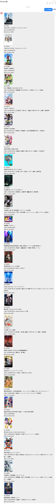

Bangumi娘使用指南
1. 简介与用途
Bangumi QQ机器人简称Bangumi娘，是为方便Bangumi用户进行分享，交流，收藏与更新动画进度等而开发的QQ机器人。
2. 基础指南
- 一切可识别的指令以中文或英文下的
冒号「:」或分号「;」开头，可以一条消息中使用多种指令，对于一些指令本身也支持多个参数的识别。 - 多个指令之间的连接符有
冒号「:」，分号「;」，等号「=」和反斜杠「/」但是需要注意用于连接符的冒号和分号只能是英文下的，否则只会被看成是一个参数。 - 一个指令可以批量参数执行，比如你希望查询两个ID的条目，你可以只使用一个指令符和两个参数即可，连接两个参数之间的符号叫参数连接符
，它只包括
空格「 」，另外指令关键字也可以充当一个参数连接符。 - 机器人使用了缓存机制，但当使用两个英文下的冒号即
「::」发起指令时，即消息开头的前缀，则消息中所有指令会请求最新的数据而非缓存的数据，但速度上会相对慢一点，也就是说此操作会导致此消息中所有的指令都不使用缓存。 - 注意: 因为参数分割符包括
空格，因此请务必注意一个参数中间不能出现空格。 - 注意: 所有的指令的识别是从
前缀(也就是分号冒号那些)开始找到的第一个与已有的指令匹配的字符决定，也就是说你的参数与指令没有绝对的位置关系，但你的参数中可能包含指令的字符，这时你就需要先将你需要的指令的关键字尽量放在前缀后面。 - 注意: 一条指令只会将第一个出现的指令作为此指令的功能，也就是说一旦指令已经被识别出来，这条指令之后的参数中出现的指令关键字都会作为参数处理而不是指令。
- 当前机器人使用的指令识别符有
user/用户(用户查询)，acg/条目/查询(条目查询)，?/？/搜索(条目搜索)，reg/绑定(用户绑定)，co/收藏(条目收藏)，up/++/更新(条目更新)，tag/标签（标签搜索）和rank/统计（统计使用情况），另外指令不分大小写，也就是说任意大小写都可以被识别。
| 指令关键字 | 指令含意 | 参数[括号内可部分或全部缺省] | 参数举例 | 高级参数举例 |
|---|---|---|---|---|
| "user" "用户" | 进行用户信息查询 | <用户ID> | 123 | 无 |
| "<空>" "acg" "条目" "查询" | 进行条目信息查询 | <条目ID>(/<条目额外信息标识符>) | 22023 | 22023/t |
| "?" "？" "搜索" | 进行条目搜索 | <搜索关键字>(/<条目类型>/<条目个数>/<起始条目下标>) | 英雄 | 英雄/x/8/2 |
| "reg" "绑定" | 将QQ号与Bangumi账号绑定 | 无 | 无 | 无 |
| "co" "收藏" | 进行条目的收藏 | <条目ID>(/<收藏类型>/<评分>/<吐槽>) | 123456 | 123456/fin/8/制作精良 |
| "up" "++" "更新" | 进行条目的更新 | <条目ID>(/<要更新的进度>) | 21435 | 21435/air |
| "tag" "标签" | 此指定标签的条目搜索 | (<标签关键字>)(/<放送季度>/<页码>) | 原创动画作品 | 原创动画作品/2019-01/2 |
| "rank" "统计" | 统计指令使用情况 | <空> 或 "me" | me | 无 |
| <条目ID> | 含意 | 参数[括号内可部分或全部缺省] | 参数举例 | 高级参数举例 |
|---|---|---|---|---|
| <数字> | 原生的条目ID | 无 | 123 | 无 |
| "#" | 从数据库中查找指定关键字的条目ID | <搜索关键字>(-<条目下标>) | #一拳超人 | #一拳超人-2 |
| "%" | 从Bangumi中查找指定关键字的条目ID | <搜索关键字>(*<条目类型>*<条目下标>) | %一拳超人 | %一拳超人*a*2 |
| <空> | 返回上次查询，更新或收藏的条目ID | 无 | <空> | 无 |
3. 指令集
3.1 用户查询
- 关键字
user或用户表示用户查询 - 参数：需要查询的用户的
数字ID或英文ID - 返回：此用户的一些基本信息
- 需要提醒一下Bangumi的ID是可以自定义英文用户名的，拥有含英文的ID同时也拥有数字ID，也就是说有两个不同的ID，但两种ID都能够查询到同一位用户，在返回的消息中第一行即是该用户的数字ID，如果此用户拥有英文ID则在头像下一行的@之后是他的英文ID，否则是数字ID。
- 具体使用示例如下：

3.2 条目查询
- 关键字
acg，查询，条目或空指令表示条目查询 - 参数：需要查询的条目的
数字ID或复杂参数(有关复杂参数请向后查阅)以及可选的条目相关的参数 - 返回：此条目的一些基本信息 [如果用户绑定了QQ则会额外提供用户收藏与进度信息]
- 具体使用示例如下：

- 额外的参数
条目ID或复杂参数+标识符(t/r/c/s/o)条目ID或复杂参数/标识符(t/r/c/s/o)- 注意：加号与斜杠的区别在于附加原本条目信息与否，使用+则在回复额外信息的同时也会回复条目本身的信息，使用/则只会回复额外信息
- 注意：标识符是可以同时出现或任意组合的，但尽量不要全部同时使用，会影响速度与结果
条目ID或复杂参数即想要收藏的条目，可以是数字的ID也可以是复杂参数，同时针对一个绑定过的用户还可以空缺来表示上一次进行条目查询的那个条目标识符即相关此条目的其他信息的标识
| 标识符(不区分大小写) | 对应的信息 |
|---|---|
| t | 此条目的标签 |
| r | 此条目的角色 |
| c | 此条目的吐槽 |
| s | 此条目的放送状态 |
| o | 此条目的staff信息 |
| a | 此条目的关联条目 |
- ----以下是具体例子----
- 例如：现假定要收藏的动画条目的ID为
220632 : 220632/s表示 只回复条目放送状态的消息: 220632+s表示 回复条目放送状态与此条目原有的消息: 220632/stc表示 回复条目的放送状态，标签和吐槽信息的消息: 220632+表示 与直接查询条目得到相同的结果-
: 220632/表示 什么也不回复 -
示例如下
3.3 条目搜索
- 关键字
?，？或搜索表示条目搜索 - 参数：需要查询的条目的关键字与可选的额外的精确条件
- 返回：搜索到的相关条目的信息
- 具体使用示例如下：

- 以上是默认不加参数的情况
- 其实不加参数的
搜索的关键字，也就是默认情况，等价于加参数情况下的搜索的关键字/a/5/0 - 也就是说
:?一拳等价于:?一拳/a/5/0 - 以下是加了参数的情况

- 额外的精确条件即额外的参数
关键字/类型/返回的结果数/返回的第一个结果的编号关键字即需要检索的关键字，同时它有一些额外的语法：+代表空格（因为一个参数之间不能出现空格，因此使用+代替）-代表需要排除的关键字类型即想要检索的条目的类型
| 类型关键字(不区分大小写) | 对应的条目类型 |
|---|---|
| a (默认) | 动画 |
| c | 书籍 |
| g | 游戏 |
| m | 音乐 |
| r | 三次元 |
| x | 全部分类 |
返回的结果数即返回的最大条目的数量，随着数量的增加消息回复会变慢返回的第一个结果的编号即从此条目开始向后数返回的结果数个作为消息返回- ----以下是具体例子----
- 例如：现假定搜索的关键字为
英雄 :?英雄表示 搜索关键字为英雄的动画类型的从0开始的5个结果 [注意编号是从0开始的]:?英雄/g/1/0表示 搜索关键字为英雄的游戏类型的第一个结果 [因为只返回一个结果，编号又是0，因此即为返回第一个结果]:?英雄//1/0表示 搜索关键字为英雄的动画类型的第一个结果 [如果对应参数位置为空则会使用默认的参数，这里是使用默认的a]:?英雄/x//1表示 搜索关键字为英雄的所有类型的从1开始的5个结果 [任意参数都可以空参数]:?英雄///表示 搜索关键字为英雄的动画类型的从0开始的5个结果 [甚至可以完全空着参数，但与默认参数无异]
3.4 绑定
- 关键字
reg或绑定表示绑定 - 参数：无
- 返回：一个绑定的网址的卡片消息
- 注意：因涉及Bangumi账号的授权问题，此功能只能在私聊下完成，而且也请不要分享自己的卡片消息给他人
- 注意：一旦用户收到了绑定的消息回复，请在5分钟之内完成绑定，否则机器人将不会受理，而且请尽量确保在点开链接之前，bangumi是处于登陆状态的，否则可能会出现问题，解决方法是登陆后重新打开绑定链接，不过即使因超时而没有完成绑定也可以重新发送
reg,机器人会继续等待5分钟

- 当打开这个链接时会出现以下授权界面

- 正如授权页面中头像旁边的文字所述的那样，当看到如下界面，并且Bangumi娘也进行了相应回复则表示绑定成功

- Bangumi娘的回复如下
- 至此，便完成了绑定的功能，偶尔授权可能会失效，此时可以通过重新绑定来解决
- 之前提到如果绑定了Bangumi账号，针对条目查询则会有额外的信息显示
- 如下所示

3.5 条目收藏
- 关键字
co或收藏表示条目收藏 - 参数：需要收藏的条目的
数字ID或复杂参数(有关复杂参数请向后查阅)以及可选的收藏相关的参数 - 返回：此条目的一些放送信息与个人的收藏等信息
- 注意：使用前提是用户QQ已经绑定了Bangumi账号
- 具体使用示例如下：
- 默认情况下会收藏为在看，不评分，不吐槽

- 额外的参数
条目ID或复杂参数/收藏类型/评分/吐槽条目ID或复杂参数即想要收藏的条目，可以是数字的ID也可以是复杂参数，同时针对一个绑定过的用户还可以空缺来表示上一次进行条目查询的那个条目收藏类型即想要将条目收藏为什么状态
| 类型关键字(不区分大小写) | 对应的收藏状态 |
|---|---|
| do / on (默认) | 在看/玩/听/读 |
| collect / fin | 看/玩/听/读过 |
| wish / td | 想看/玩/听/读 |
| hold | 搁置 |
| drop | 抛弃 |
评分即想要给此条目评多少分吐槽即想要对此条目发表的吐槽 [注意：不能够包含基础指南中提到的两种连接符以及参数连接符，会被忽略和截断，请使用相应中文字符代替]- ----以下是具体例子----
- 例如：现假定要收藏的动画条目的ID为
220632 :co 220632/fin表示 收藏此动画为看过状态:co 220632/drop/1/我后悔点开了它表示 收藏此动画为抛弃状态:co 220632///我，觉得它还可以抢救表示 收藏此动画为在看状态，这里是使用了空白参数，会默认使用do即表示在看，同时评分也是如此，默认不打分，最后只加上了吐槽，注意：吐槽中使用的是中文下的逗号，使用英文下的话会只吐槽"我":co 220632///表示 收藏此动画为在看状态 [甚至可以完全空着参数，但与默认参数无异]
3.6 条目更新
- 关键字
up，++或更新表示条目更新 - 参数：需要更新的条目的
数字ID或复杂参数(有关复杂参数请向后查阅)以及可选的更新相关的参数 - 返回：此条目的一些放送信息与个人的进度等信息
- 注意：使用前提是用户QQ已经绑定了Bangumi账号
- 具体使用示例如下：
- 现在更新条目为193619的动画，在示例之前，示例用的Bangumi账号没有收藏过此条目
- 默认参数的情况下会将用户进度+1，如果原本用户没有收藏过条目，则此指令会自动收藏为
在看状态，进度更新至第一话
- 额外的参数
条目ID或复杂参数/进度参数/评分/吐槽条目ID或复杂参数即想要收藏的条目，可以是数字的ID也可以是复杂参数，同时针对一个绑定过的用户还可以空缺来表示上一次进行条目查询的那个条目进度参数即想要更新的进度，可以是具体数字表示想更新到的话数，也可以是air与fin，分别表示当前放送的话数和总话数，默认空缺情况下表示当前进度+1
| 进度参数 | 对应进度 |
|---|---|
| 数字 | 此数字的大小 |
| air | 已放送话数 |
| fin | 总话数(同时会收藏为看过状态) |
| +x | 在自己进度基础上向后加上 x 话 |
| -x | 在自己进度基础上向前减去 x 话 |
| (数/参)+x | 在原有的数字和参数表示基础上向后加上 x 话 |
| (数/参)-x | 在原有的数字和参数表示基础上向前减去 x 话 |
- 例子： 现假设某番12话，自己的进度是2话，当前放送了6话
| 进度参数 | 对应进度结果 |
|---|---|
| 5 | 5/12 |
| air | 6/12 |
| fin | 12/12(同时会收藏为看过状态) |
| +2 | 4/12 |
| -1 | 1/12 |
| air-2 | 4/12 |
| fin-7 | 5/12 |
评分即若收藏为看过时，对此条目的评分 [注意：只有当更新进度大于等于TV总话数才会触发收藏为看过状态]吐槽即若收藏为看过时，对此条目发表的吐槽 [注意：只有当更新进度大于等于TV总话数才会触发收藏为看过状态]- ----以下是具体例子----
- 例如：现假定要更新的动画条目的ID为
240760 :++ 240760/fin表示 更新进度为百分百同时收藏此动画为看过状态:++ 240760/air表示 更新进度为百分百同时收藏此动画为看过状态，原因是现已经全部放送，此时fin等价于air:up 240760/fin/9/和第一季一样精彩表示 更新进度为百分百同时收藏此动画为看过状态，评分9分，吐槽：和第一季一样精彩:++ 240760/5/5/这里没用表示 如未收藏此动画，则收藏为在看状态，更新进度为5话，由于5话小于放送的总话数，因此后两个参数并不会被使用:++ 240760///表示 如未收藏此动画，则收藏为在看状态，进度为上次更新进度+1，如果未收藏则表示0+1=1 [甚至可以完全空着参数，但与默认参数无异]
3.7 标签搜索
- 关键字
tag或标签表示标签搜索 - 参数：需要查询的条目的关键字与可选的额外的精确条件
- 返回：拥有符合条件的条目列表
- 注意：考虑到常用性当前只会返回TV动画
- 具体使用示例如下：
- 默认是以日期排序的

- 额外的精确条件即额外的参数
标签名/放送季度/结果的页码标签名即需要检索的标签放送季度即想要限定的放送的季度- 示例如下
| 放送季度参数 | 放送季度 |
|---|---|
| 2015-1 | 2015年的春季番 |
| 2018-04 | 2018年的夏季番 |
| 2018-7 | 2018年的秋季番 |
| 2018-10 | 2018年的冬季番 |
-
结果的页码即返回所在页码的结果，默认不填写即表示第一页，结果有多页时可以调整此参数 -
----以下是具体例子----
- 例如：现假定搜索的关键字为
原创 :tag原创表示 搜索标签为原创的任意放送日期的TV动画的第一页的所有结果:tag 原创/2019-04/1表示 搜索标签为原创的2019年4月放送的TV动画的第一页的所有结果 [也可以显示的表示第1页]:tag /2019-04/2表示 搜索所有2019年4月放送的TV动画的第二页的所有结果 [标签为空可以匹配任意条目]:tag //表示 搜索当前所有TV动画类型的第一页的所有结果 [甚至可以完全空着参数，但与默认参数无异]
3.8 统计使用情况
- 关键字
rank或统计表示统计使用情况 - 参数：
空或me - 返回：如下表
| 参数 | 返回 |
|---|---|
| 空 | 今日使用前五位 |
| me | 自己的使用情况 |
- 具体使用示例如下：
4. 复杂参数
4.1 基本复杂参数
- 第一类：
井号#参数 - 功能说明：从数据库中查找条目，结果是以由条目ID
由大到小排序并且优先返回动画类型，凡是使用条目查询或条目搜索过的出现的条目数据库都会进行存储，也就是说随着使用查找的结果可能会发生改变 - 参数说明：
#关键字(+关键字2)(-数字)括号()可以省略
| 符号 | 含意 |
|---|---|
| + | 添加多个可不连续关键字 |
| - | 返回第几个结果 |
- ----以下是具体例子----
- 例如：现假定要查询的关键字为
一拳 :#一拳表示 使用条目查询查询数据库中与一拳匹配的第一个结果的条目:++#一拳+人-1表示 使用条目更新更新数据库中与一拳 人匹配的第一个结果的条目:co #一拳-2表示 使用条目收藏收藏数据库中与一拳匹配的第二个结果的条目
- 第二类：
百分号%参数 - 功能说明：从Bangumi查找条目，功能相当于
条目搜索，但只会得到一个条目，使用此参数可以避免使用两次指令 - 参数说明：
%搜索关键字*类型参数*结果的第几个 搜索关键字与条目搜索的参数一样，即需要检索的关键字，同时它有一些额外的语法：+代表空格（因为一个参数之间不能出现空格，因此使用+代替）-代表需要排除的关键字类型参数即想要检索的条目的类型
| 类型参数关键字(不区分大小写) | 对应的条目类型 |
|---|---|
| a (默认) | 动画 |
| c | 书籍 |
| g | 游戏 |
| m | 音乐 |
| r | 三次元 |
| x | 全部分类 |
-
结果的第几个即想要返回的第几个结果 -
----以下是具体例子----
- 例如：现假定要查询的关键字为
一拳 :%一拳表示 使用条目查询查询Bangumi搜索中与一拳匹配的第一个动画类型结果的条目:++%一拳+人-Movie表示 使用条目更新更新Bangumi搜索中与一拳 人 -Movie匹配的第一个动画类型结果的条目:co %一拳**2表示 使用条目收藏收藏Bangumi搜索中与一拳匹配的第二个动画类型结果的条目:co %一拳*g*1表示 使用条目收藏收藏Bangumi搜索中与一拳匹配的第一个游戏类型结果的条目
- 第三类：
空缺参数 - 功能说明：表示上次使用
条目查询，条目收藏或条目更新操作的条目 - 参数说明：无参数，只有指令
-
特别说明：虽然参数本身是无，但如果没有对应指令的额外参数（只针对
条目查询而言），Bangumi娘只会无视指令 -
----以下是具体例子----
- 例如：现假定要查询的关键字为
一拳 : +表示 使用条目查询查询上次使用条目的条目，使用+号防止全空缺指令被无视: /s表示 使用条目查询查询上次使用条目的条目放送状态:++表示 使用条目更新更新上次使用条目的条目:++ /air表示 使用条目更新更新上次使用条目的条目，更新到放送话数:co表示 使用条目收藏收藏上次使用条目的条目:co /fin/9/4月番中最优秀的作品表示 使用条目收藏收藏上次使用条目的条目，评分加吐槽
4.2 条目查询的复杂参数
- 注意：凡是使用了
#或%解析一律不能接+，只能接/
4.3 条目收藏的复杂参数
- 暂时无特别说明
4.4 条目更新的复杂参数
- 延时指令
- 参数说明：在指令的
最后加上_倒计时(分钟)[ 注意：仅限私聊使用 ] - 功能目的：为了方便在看完一集动画
忘记更新或懒或没那种心情时使用 -
功能说明：仅仅适用于
条目更新，有当前最大使用数量上限，可能会发生意外导致不能更新，时间一般会与预计的晚一点，因此尽量少使用 -
----以下是具体例子----
:++ 220632 _24表示24分钟后会执行此指令